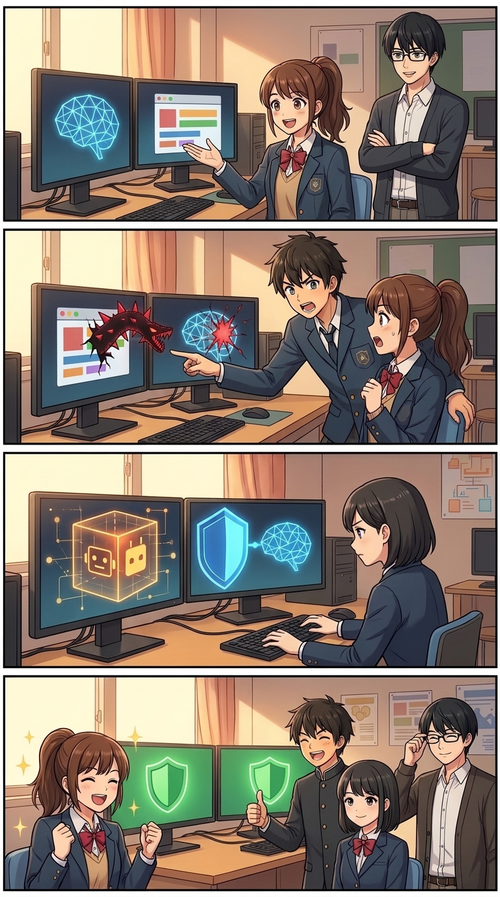
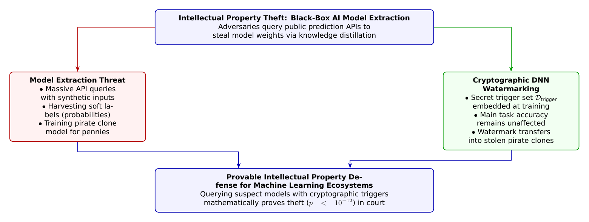

🎨 4コマ漫画挿絵（文字なし）
AI高解像度生成
▲ 【挿絵】青葉台高校 情報科学部＆帝都科学大学サイバーディフェンス・ラボでの実践シーン
💬 4コマ漫画キャラクターセリフ (Story Dialogue Script)
日・英バイリンガル (JA / EN)[蓮]「数千万円規模の計算資源を投じる企業でも、AIモデルそのものは最高の知的財産ですね！」
[Ren] "Indeed! For tech firms spending millions on compute, the trained model weights are their crowning intellectual property!"
[葵]「ええっ！？ モデルの中身を直接ハッキングしなくても、APIの外側からAIの知能を丸パクリできちゃうの！？」
[Aoi] "What!? Without breaching the server, they can clone our entire model just through the front door API!?"
[悠真]「海賊版AIが作られても、その秘密のクエリを投げれば『これは我々の盗難モデルだ』と数学的に100%立証できるんだ」
[Yuma] "Even if they clone it, probing the pirate AI with our key mathematically proves intellectual property theft in any court!"
[全員]「知能の権利を暗号で護り抜き、私たちは次世代AIエコシステムの正義を拓く！」
[All] "Safeguarding intellectual ownership with rigorous cryptography, we champion integrity in the AI era!"
📖 小説本文
冬晴れの放課後、青葉台高校の情報科学部室。大型モニターには、葵が誇らしげに腕組みをしながら立ち、その隣で神崎蓮が真剣な表情でネットワークトラフィックを監視していた。
「見てよ蓮くん！ 私たちが半年間かけて収集した膨大なサイバー脅威ログとマルウェアサンプルを学習させた、情報科学部特製の『高精度マルウェア判定AI』よ！ クラウドAPIとして試験公開したら、世界中からアクセスが集まってるの！」
「確かに素晴らしい精度です、葵先輩。ROC曲線のAUCも0.998を記録していますし、商用のセキュリティベンダーの検知エンジンにも匹敵します。何億・何十億円ものGPU投資を行って独自の大規模モデルを開発する現代のテック企業にとって、**『訓練済みモデルの重み（Weights & Architecture）』**こそが企業の生命線であり、最も価値ある知的財産（IP: Intellectual Property）ですからね」
蓮が感心したように頷いたその直後、モニターのAPIリクエスト流量グラフが突如として垂直に跳ね上がった。
警告アラートが激しく点滅する。
`[HIGH QUERY RATE] 15,000 req/sec from Client IP 203.0.113.88`
「……ん？ なんだか急にリクエストが激増したよ？ 大ヒットしたのかな！？」葵が目を丸くする。
「違います！ これは正規の利用者のアクセスじゃありません！」蓮がキーボードを叩き、送信されているペイロードをターミナルに表示させた。「ランダムな合成入力や摂動を加えたデータを、毎秒何万件も規則的に送りつけ、モデルが出力する予測クラスと確率分布ベクトル（ソフトラベル）を全件記録しています……！ 葵先輩、これは**『モデル抽出（Model Extraction / Model Stealing）攻撃』**です！」
「モデル……抽出！？ サーバーがハッキングされて、モデルファイルが盗まれちゃったの！？」
「いいえ、サーバーのOSやデータベースには一切侵入されていません」
背後から静かに入ってきた城崎悠真が、温かいほうじ茶の湯気を揺らしながら告げた。 「それが、API時代における最も狡猾な知財侵害なんだ。攻撃者はサーバーのセキュリティホールを突く必要すらない。正規に公開されているAPIの入力と出力（入出力ペア）を大量にサンプリングし、それを教師データ（擬似ラベル）として自分の手元にある空っぽのニューラルネットワークを蒸留（Distillation）学習させるんだ。これによって、莫大なコストをかけて開発した本家のモデルと全く同じ知能を持つ『完全なクローン（海賊版モデル）』を、わずか数万円のAPI利用料だけでタダ同然に複製できてしまうんだよ」
「そんなのズルいよ！」葵が机を叩いた。「半年間必死にデータを集めて徹夜でチューニングした私たちの努力が、外側からAPIを叩くだけで丸パクリされちゃうなんて！」
「ご安心ください、葵先輩」
白石結衣がホワイトボードの前に立ち、優雅にペンを走らせた。 「その盗難をあらかじめ見越して、学習プロセスの段階で**『暗号学的モデル電子透かし（DNN Watermarking）』**を埋め込んであります」
---
📊 セキュリティ構造図解 (TikZ LuaLaTeX生成)
国家安全基準・工学図解
▲ 【技術構造図】IPAデジタルスキル標準・国際規格に準拠した仕組みのモデル化